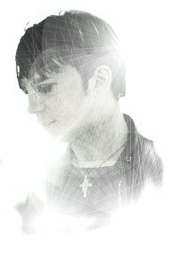

RJMedia
Ecosystem
Past • Present • Future. One unified platform for music preservation, community connection, and open-source innovation. Everything in one place.
Remember the Sound
RJMedia Digital Archive preserves rare performances, music documentaries, research, and cultural history.
Featured Collection: Paul Draper & Mansun Archive

Paul Draper & Mansun
Complete Archive
16 news logs, 11 press scans, 52 audio tracks. Spanning 1996 to 2012 — from the Stripper Vicar era through solo recovery.
📰 News & Logs
16 chronological studio dispatches, announcements, and direct updates from 2006–2012.
📄 Press & Interviews
High-resolution magazine scans from Melody Maker, Select, Rock Sound, and Uncut. 4 major features.
🎵 MP3 Vault
52 tracks: Amsterdam Paradiso 1998 live bootleg, Grind demos, rarities, and unreleased studio work.
Keep the Connection
Community stories, practical resources, and discussion spaces. Behind every archive entry is a person.
🏘️ Community Stories
Personal narratives about housing, connectivity, digital inclusion, and life change.
Launching Soon
💬 Forum & Discussion
Topics: housing, AI, ADHD, music preservation, creator workflows, and open source projects.
Launching Soon
🤝 Need Help?
Practical support with housing, digital access, connectivity, and information organization.
Build What's Next
AI systems, metadata automation, and open-source tools. Technology in service of preservation and community.
🤖 AI & Automation
Archive intelligence notes. AI-assisted cataloguing, preservation metadata, and intelligent discovery tools.
🔗 Open Source
Docker containers, metadata frameworks, and preservation pipelines. Join the mission on GitHub.
📊 Data & Metadata
Standardized archival formats, structured data, and intelligent systems for cultural preservation.